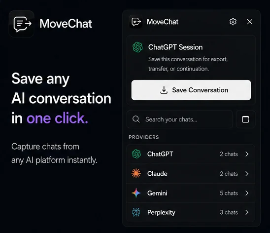

ChatGPT supports direct document uploads through its paperclip icon on Plus, Team, Enterprise, and recent standard model tiers. In theory, you drop in an annual report or academic paper and ask questions immediately.
In practice, PDFs are not simple text files. They are vector layout containers originally designed for print fidelity, not automated machine reading. When you upload a document, ChatGPT's background pipeline runs internal text extraction. If your PDF contains non-standard structures, the extraction fails silently or produces garbled text.
The 5 Main Reasons ChatGPT Cannot Read Your PDF
1. The File Is an Image Scan Without an OCR Layer
This is the single most common cause of failure. When an office scanner or mobile app creates a PDF, it frequently saves each page as a full-bleed picture (like a JPEG or PNG wrapped in a PDF envelope). To human eyes, the words are visible. To ChatGPT's text extractor, there is zero selectable text.
2. Multi-Column Layouts Scramble Reading Order
Academic papers, newspapers, and financial prospectuses often use two or three vertical columns. Basic PDF text extractors read across coordinates horizontally from left to right. When that occurs, sentence fragments from Column A get mixed into Column B on the same horizontal plane, resulting in nonsense sentences that confuse the model.
3. Copy and Print Security Restrictions
Many bank statements, medical records, and corporate manuals come with internal PDF permission flags set to disabled content copying. Even without an opening password, these restriction flags prevent automated tools from pulling the underlying text stream.
4. Exceeding File Size and Context Constraints
While ChatGPT accepts files up to 512 MB in theory, practical processing has tighter limits. Very long documents (such as 300 page textbooks) force the system to perform retrieval chunking. If the chunks miss your target data, ChatGPT claims the information does not exist in the file.
5. Embedded Tables Rendered as Vector Line Art
Financial spreadsheets saved to PDF often turn into thousands of individual line segments rather than structured tabular text. When extracted, numbers detach from their column headers, causing ChatGPT to misattribute financial metrics.

Step-by-Step: How to Prepare Your PDF for ChatGPT
-
Test for Selectable Text
Open your PDF in any browser or reader. Try to highlight a sentence with your cursor and press Ctrl + C. Paste it into a text editor. If you cannot select words or the pasted text produces strange symbols, your document requires Optical Character Recognition (OCR).
-
Run an OCR Pass
You can run OCR through Adobe Acrobat (Tools → Scan & OCR → Recognize Text), Apple Preview on macOS, or free local utilities like
tesseract. This adds a machine-readable text layer behind the visible images. -
Remove PDF Security Restrictions
If your PDF has permissions locked, print the file to a fresh PDF using your operating system's native PDF printer (Ctrl + P → Microsoft Print to PDF or Save as PDF). This creates an unencrypted duplicate without restrictive flags.
-
Convert Complex Layouts to Plain Markdown
For research papers with heavy equations or two columns, converting the document to Markdown first yields far better AI comprehension. Tools like Pandoc or simple copy-pasting into a
.txtfile preserve pure sequential context without layout artifacts. -
Split Large Files by Section
Instead of uploading an entire 200-page book, extract the specific 10 to 20 pages you need. ChatGPT will analyze the concentrated content with noticeably higher precision and avoid truncation errors.
Pro Tip: Use Clear System Prompts with Uploaded Files
When you upload your PDF, begin your prompt with explicit grounding instructions: "Base your answers exclusively on the uploaded document. If a detail is missing or ambiguous in the text, explicitly state that rather than estimating." This prevents the model from substituting general training data for missing text chunks.
Preserving and Exporting Your Document Analysis
After spending time preparing your document and having ChatGPT dissect dense tables, legal contracts, or technical specifications, that analysis remains stuck inside a temporary browser session.
If you want to move that analysis over to Claude for deeper writing, verify findings with Gemini, or export the conversation into a permanent research document, use MoveChat.
MoveChat lets you capture the complete conversation in one click, download it as a clean PDF or Markdown file, or resume the entire thread directly on another AI platform with your uploaded context intact.
Never lose important AI research sessions
Transfer chats between ChatGPT, Claude, and Gemini, or export clean PDFs in one click.
Frequently Asked Questions
Why does ChatGPT say it cannot find information that is clearly in my PDF?
ChatGPT breaks large files into smaller embedding chunks. If the search query does not match the exact phrasing indexed in those chunks, the retrieval step fails to feed the relevant passage to the model. Using focused file sizes or explicitly quoting a nearby section heading fixes this.
Can ChatGPT read password-protected PDFs?
No. Encrypted documents cannot be opened by the background parsing worker. You must remove password protection before uploading.
Is there a file size limit for PDF uploads in ChatGPT?
The standard upload limit is 512 MB per file, but practical document processing performs best on documents under 50 MB and under 100 pages.